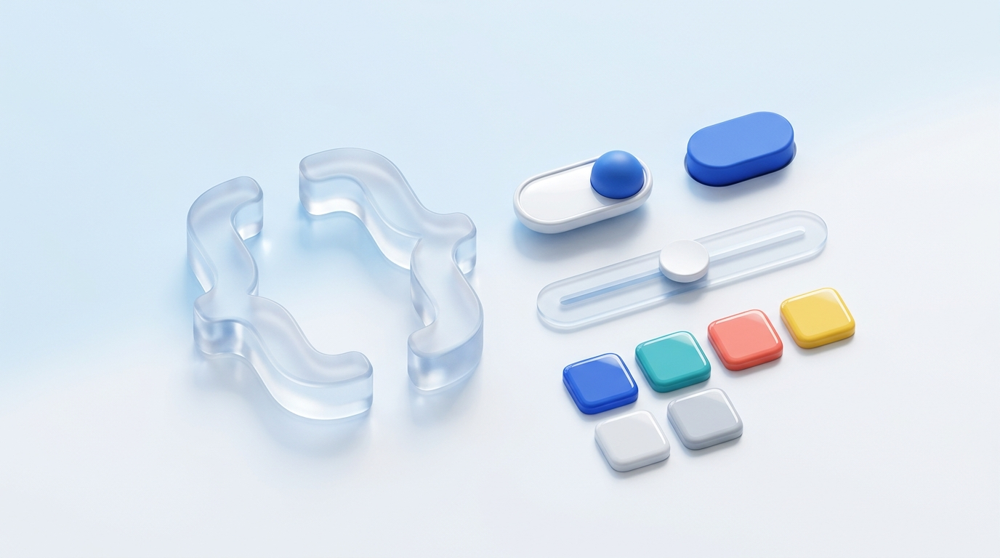
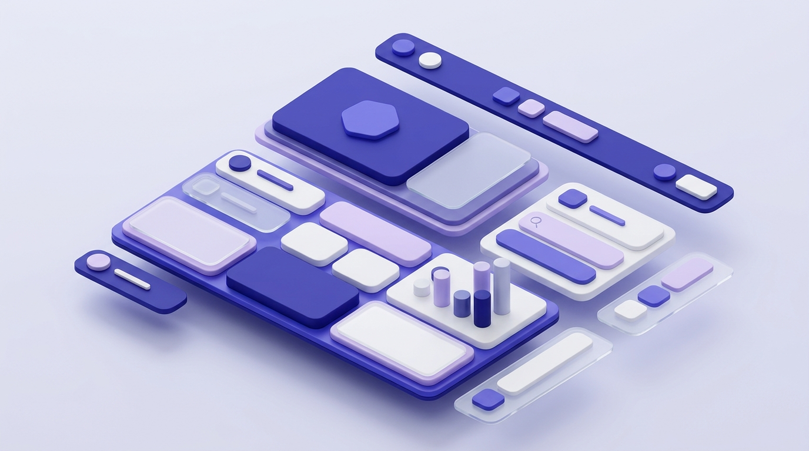
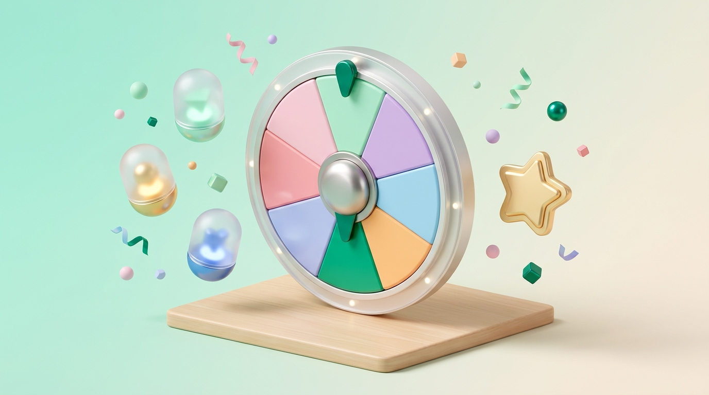

Chọn công cụ bạn muốn mở
Hai thư viện giao diện dựng sẵn cho lập trình viên và một bộ trò chơi gọi tên cho lớp học.

220 mẫuCode Library
Kho component gọn nhẹ không dùng framework — xem trực tiếp và chép code ngay.

259 mẫuAyro UI
Bộ block giao diện chuẩn Bootstrap 5 cho landing page, bảng giá và trang quản trị.

10+ trò chơiGọi Tên Ngẫu Nhiên
Vòng quay, bốc thăm, đua tốc độ và chia nhóm học sinh trực quan trên máy chiếu.